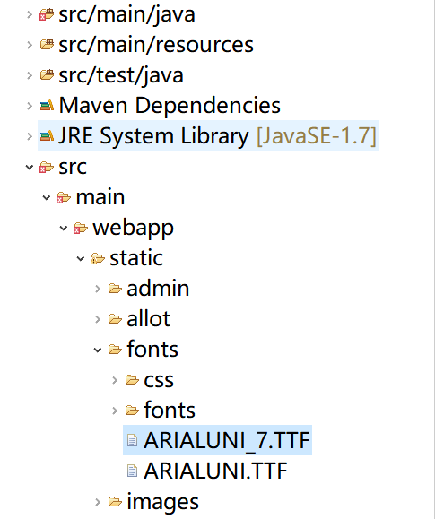

制作html模板
引入flying-saucer-pdf jar包，maven工程直接添加如下代码即可。若不是，则去下载对应版本的jar包。
1
2
3
4
5
| <dependency>
<groupId>org.xhtmlrenderer</groupId>
<artifactId>flying-saucer-pdf</artifactId>
<version>9.0.8</version>
</dependency>
|
添加页眉页脚页码
通过 @page 来添加页眉页脚页码，设置每页的长宽。
1
2
3
4
5
6
7
8
9
10
11
12
13
14
15
16
17
18
19
20
21
22
23
24
25
26
27
28
29
30
31
32
33
34
| @page {
<!-- 每页pdf的长宽，单位为英寸，这里采用的是A4纸的长宽， -->
size: 8.27in 11.69in;
<!-- 页脚的中间位置 -->
@bottom-center{
content: counter(page);
font-family: SimSun;
font-size: 16px;
color:red;
};
<!-- 页脚的右侧 -->
@bottom-right{
<!-- 计算页码 -->
content: counter(page);
font-family: SimSun;
font-size: 9px;
color: #333;
};
<!-- 页眉的左侧 -->
@top-left {
font-size: 14px;
content: "${info}${reportName}";
font-family:'Arial Unicode MS';
};
<!-- 页眉的右侧 -->
@top-right {
content: "${header}";
font-family:'Arial Unicode MS';
font-size: 14px;
};
}
|
html结构
1
2
3
4
5
6
7
8
9
10
11
12
13
14
15
16
17
18
19
| <style>
.page{
page-break-before:always;
width: 7.7in;
height: 10.8in;
padding: 20px 0 0 0;
}
</style>
<body style="font-family:'Arial Unicode MS'">
<div class="page">
第一页
</div>
<div class="page">
第二页
</div>
<div class="page">
第三页
</div>
</body>
|
因为需要严格控制每页的内容，在每页的DOM容器上添加css属性 page-break-before:always; 强制分页。再控制每个容器的长宽略小于page的长宽。
把html模板导出为pdf
1
2
3
4
5
6
7
8
9
10
11
12
13
14
15
16
17
18
19
20
21
22
23
24
25
26
27
28
29
30
31
32
33
34
35
36
37
38
39
40
41
42
43
44
45
46
47
48
49
50
51
52
53
54
55
56
57
58
59
60
61
62
|
public static String htmlGenerate(String template, Map<String,Object> variables) throws Exception{
Configuration config = new Configuration(Configuration.VERSION_2_3_23);
config.setDefaultEncoding("utf-8");
config.setClassForTemplateLoading(ReportService.class, "../template");
Template t = config.getTemplate(template);
StringWriter stringWriter = new StringWriter();
BufferedWriter writer = new BufferedWriter(stringWriter);
t.process(variables, writer);
String htmlStr = stringWriter.toString();
writer.flush();
writer.close();
return htmlStr;
}
public static void pdfGenerate(String htmlStr, OutputStream out,String font) throws Exception {
DocumentBuilder builder = DocumentBuilderFactory.newInstance().newDocumentBuilder();
Document doc = builder.parse(new ByteArrayInputStream(htmlStr.getBytes()));
ITextRenderer renderer = new ITextRenderer();
ITextFontResolver fontResolver = renderer.getFontResolver();
fontResolver.addFont(font, BaseFont.IDENTITY_H, BaseFont.NOT_EMBEDDED);
renderer.setDocument(doc, null);
renderer.getSharedContext().setBaseURL("file:/"+UploadUtils.getConfig("FILE_REPOSITORY")+"/");
renderer.layout();
renderer.createPDF(out);
out.close();
}
public String reportPDF(String saveDir, Map<String,Object> dataMap, String font){
String fileAddress = "";
try {
fileAddress = saveDir + java.io.File.separator + "betahouse.pdf";
String htmlStr = htmlGenerate("pdf_template.html", dataMap);
OutputStream out = new FileOutputStream(fileAddress);
pdfGenerate(htmlStr, out, font);
} catch (Exception e) {
e.printStackTrace();
}
return fileAddress;
}
|
添加中文支持
下载 Arial Unicode MS(ARIALUNI.TTF)，然后添加到项目的静态文件夹下，

1
2
3
4
|
String font = request.getSession().getServletContext().getRealPath("/")
+File.separator+"static"+File.separator+"fonts"+File.separator
+"ARIALUNI.TTF";
|
这里的话已经在pdfGenerate()方法里写好了，如下代码 可以添加中文支持
1
2
3
4
5
6
7
| String font = request.getSession().getServletContext().getRealPath("/")
+File.separator+"static"+File.separator+"fonts"+File.separator
+"ARIALUNI.TTF";
ITextRenderer renderer = new ITextRenderer();
ITextFontResolver fontResolver = renderer.getFontResolver();
fontResolver.addFont(font, BaseFont.IDENTITY_H, BaseFont.NOT_EMBEDDED);
renderer.setDocument(doc, null);
|
添加图片
这里有个bug，我调了很久才发现，查了很多博客才发现，
想要将html中的图片导出到pdf中，<img src="" alt="" /> 标签的图片路径需要图片的相对路径，而且需要在后台预先设置好，如下：
1
2
3
4
| ITextRenderer renderer = new ITextRenderer();
renderer.setDocument(doc, null);
renderer.getSharedContext().setBaseURL("file:/"+UploadUtils.getConfig("FILE_REPOSITORY")+"/");
|
设置图片相对路径时，最前面必须加上”file:/“，然后再加上 图片目录的路径。
这里有个很坑的地方，之前写网页的时候，写图片路径时用的都是\反斜杠，因此我用的也是\，而且通过程序从本地读出来的文件路径也都是用反斜杠的，后来试了很多次后，发现这里写文件路径时的路径分隔符都必须是/正斜杠，只能用 replaceAll()函数把路径里面的反斜杠全部替换成正斜杠，然后导出就有图片了。
1
| url2 = url2.replaceAll("\\\\", "/");
|
1
2
|
<img src="${imgUrl}" alt="" width="700px" class="cover-img" />
|
一些常用的 freemarker 语法
请看java通过freemarker导出doc
-------------本文结束 感谢您的阅读-------------